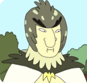

TOP 5
1º - Morty Smith
Morty, aos 14 anos, passou por experiências extraordinárias no show, incluindo deixar sua família repetidamente para alterar a realidade, enterrar seu próprio corpo e enfrentar inúmeras situações de quase morte. Essas experiências moldaram um Morty mais complexo e maduro, que perdeu parte de sua inocência infantil, mas ainda mantém uma sólida moralidade e um coração bondoso.
2º - Rick Sanchez
Rick afirma saber absolutamente tudo no universo, tornando-o um dos cientistas mais inteligentes da TV. Além disso, Rick é essencialmente um supersoldado carregado de gadgets, capaz de combater qualquer ataque.
3º - Jerry Smith
Jerry é um personagem autêntico admirável. Embora tenha feito algumas coisas embaraçosas nas primeiras temporadas, ele também teve momentos de verdadeira bravura, como quando lutou contra os Cronenbergs para proteger Beth e Summer e ajudou a salvar a vida de Rick em The Whirly Dirly Conspiracy.
4º - Birdperson

Birdperson é o melhor e mais próximo amigo de Rick. Na verdade, os dois até se beijam em uma edição da série de quadrinhos. Além de ser um parceiro romântico em potencial para Rick, Birdperson trabalhou duro para ajudá-lo a rastrear o assassino de Diane e Beth, indo a qualquer lugar que Rick pedisse.
5º - Beth Smith
A tendência de Beth de menosprezar seu marido, Jerry, pode ser exasperante para alguns, mas ela sempre apresenta argumentos sólidos sobre o estado de seu casamento e claramente se esforçou muito.